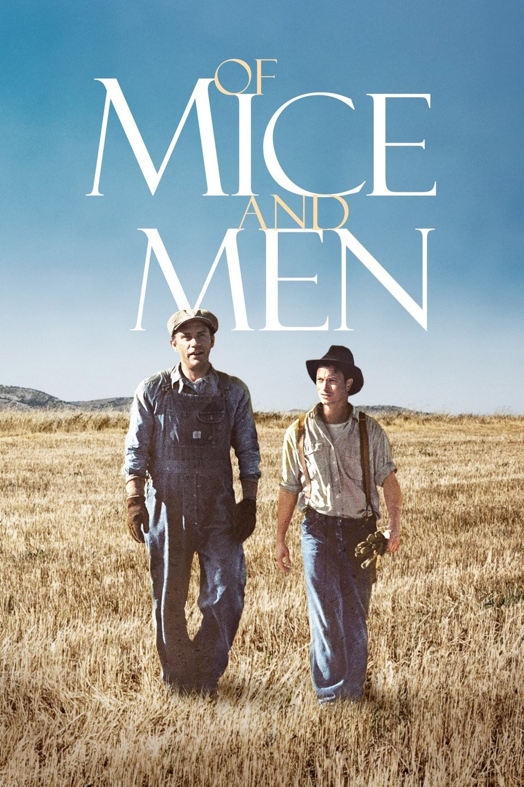
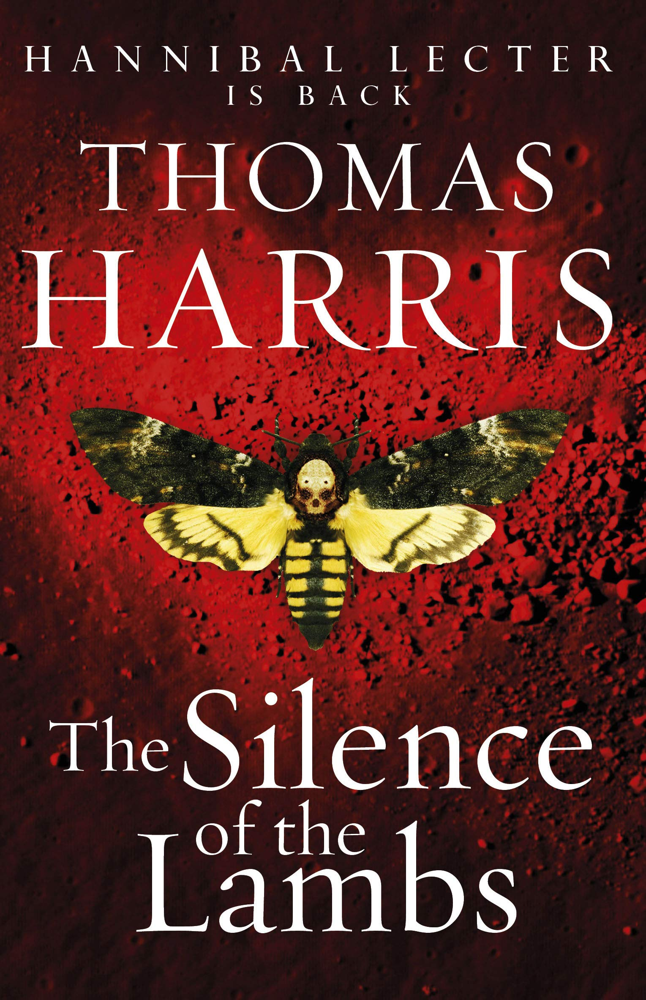

-
Of Mice and Men
Author: John Steinbeck
Summary: Of Mice and Men follows George and Lennie, two Depression-era drifters with dreams of owning a piece of land. While George is sharp and protective, Lennie is large and mentally disabled, and their friendship is tested when Lennie accidentally causes a tragic incident, ultimately forcing George to make a heartbreaking decision to protect him.
-
Catch-22

Author: Joseph Heller
Summary: The book is a satirical critique of military bureaucracy and the illogical nature of war, set during World War II. The story follows a U.S. Army Air Forces B-25 bombardier stationed in Italy, who is trying to maintain his sanity while fulfilling his service requirements so that he can go home.
-
The Silence of the Lambs
Author: Thomas Harris
Summary: The Silence of the Lambs follows FBI trainee Clarice Starling as she seeks the help of imprisoned cannibalistic serial killer Dr. Hannibal Lecter to catch another brutal killer, Buffalo Bill. As Clarice and Lecter engage in a tense psychological game, she uncovers disturbing truths while risking her own life to stop the murders.